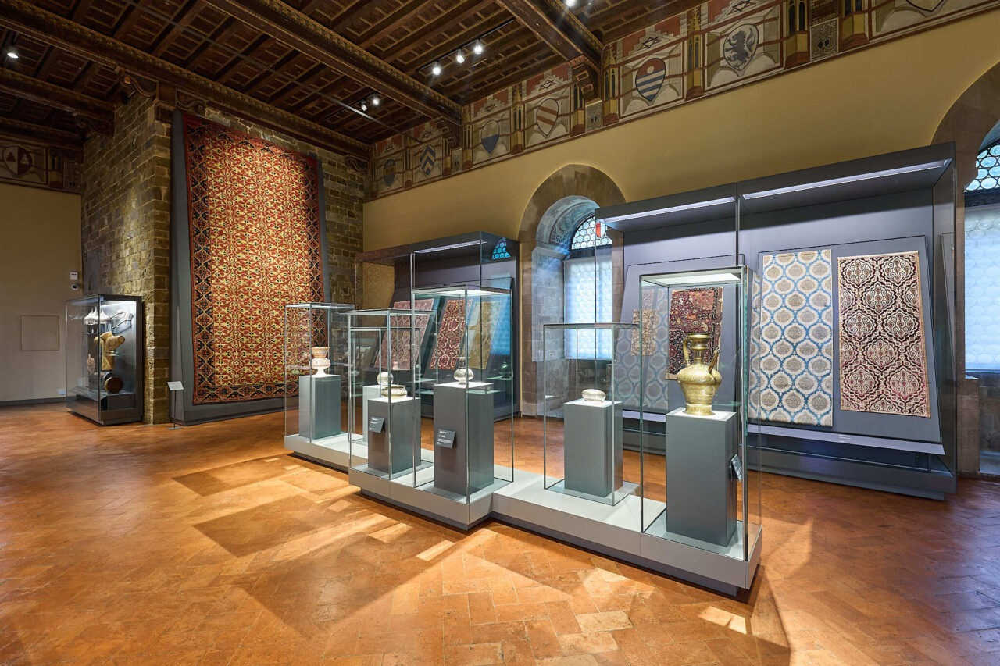
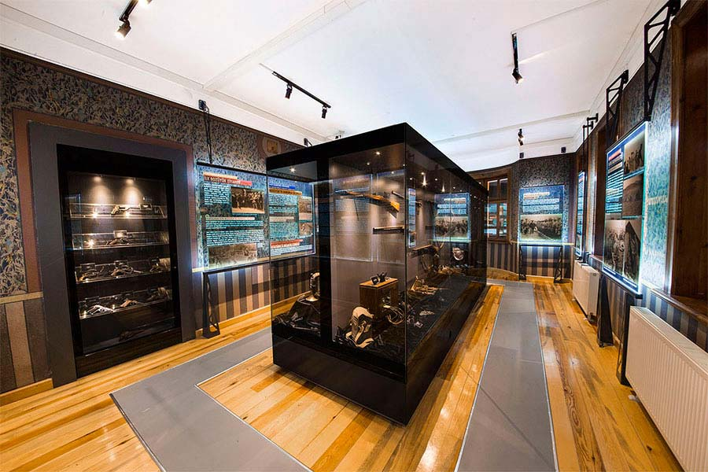

Koleksiyonunuzdaki Hazineleri Korumanıza ve Sergilemenize Yardımcı Oluyoruz

Müze vitrinlerinin aynı anda iki ayrı işlevi yerine getirmesi gerekir: Sergiledikleri eserleri korumak ve saklamak ve ziyaretçilerin bunlardan keyif almasını sağlamak.
Neredeyse aynı dış görünüme sahip vitrinler, büyük ölçüde farklı performans özellikleri sağlayabilir. Sınıflandırma sistemimiz, hava geçirmezlik, iklim kontrolü, boyut, açma sistemleri, güvenlik ve benzeri konulardaki hassas standartları birleştirerek belirlenir. Olağanüstü performans, form, stil veya malzeme gerektiren özel tasarım projeleri kendi kategorilerindedir
